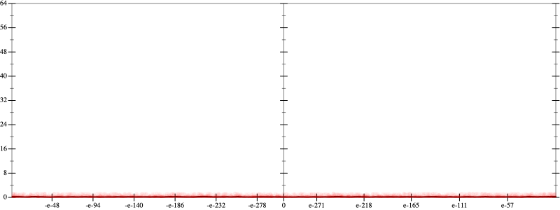
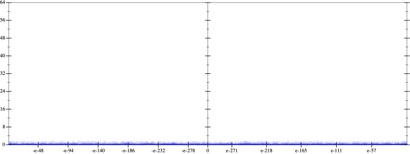
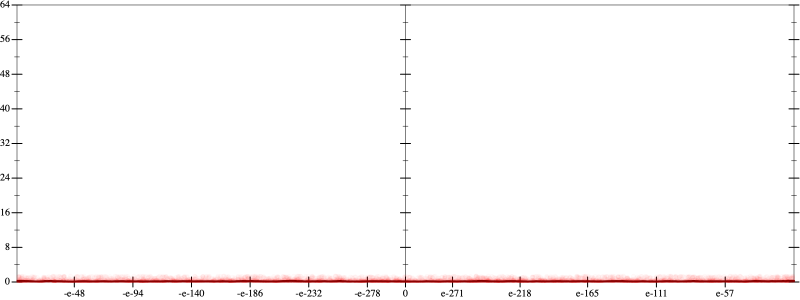
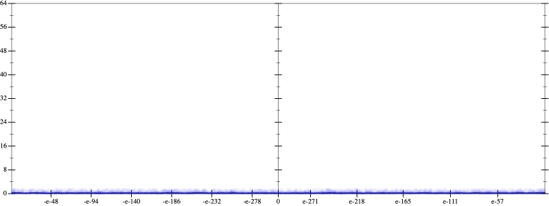
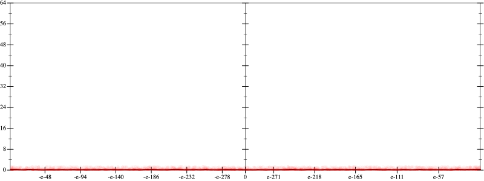
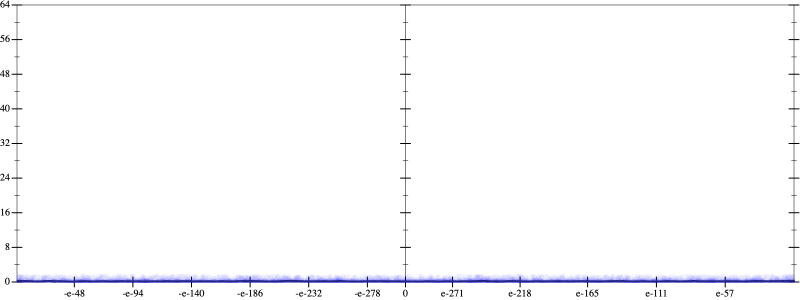

Error
 
Bits error versus x
Bits error versus x
Results
Initial program 0.2
Time bar (total: 2.9m)Debug log
herbie shell --seed 1260826035
(FPCore (x)
:name "3"
:pre (and (>= x -0.001) (<= x 0.001))
(+ (* -1.5 x) (* 2.5 (* (* x x) x))))